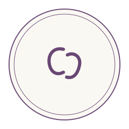
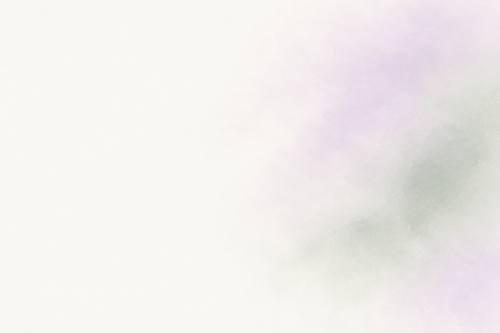
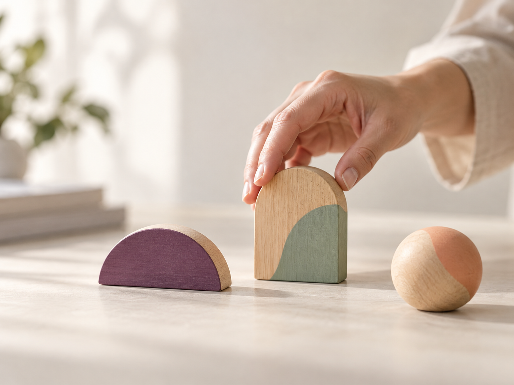
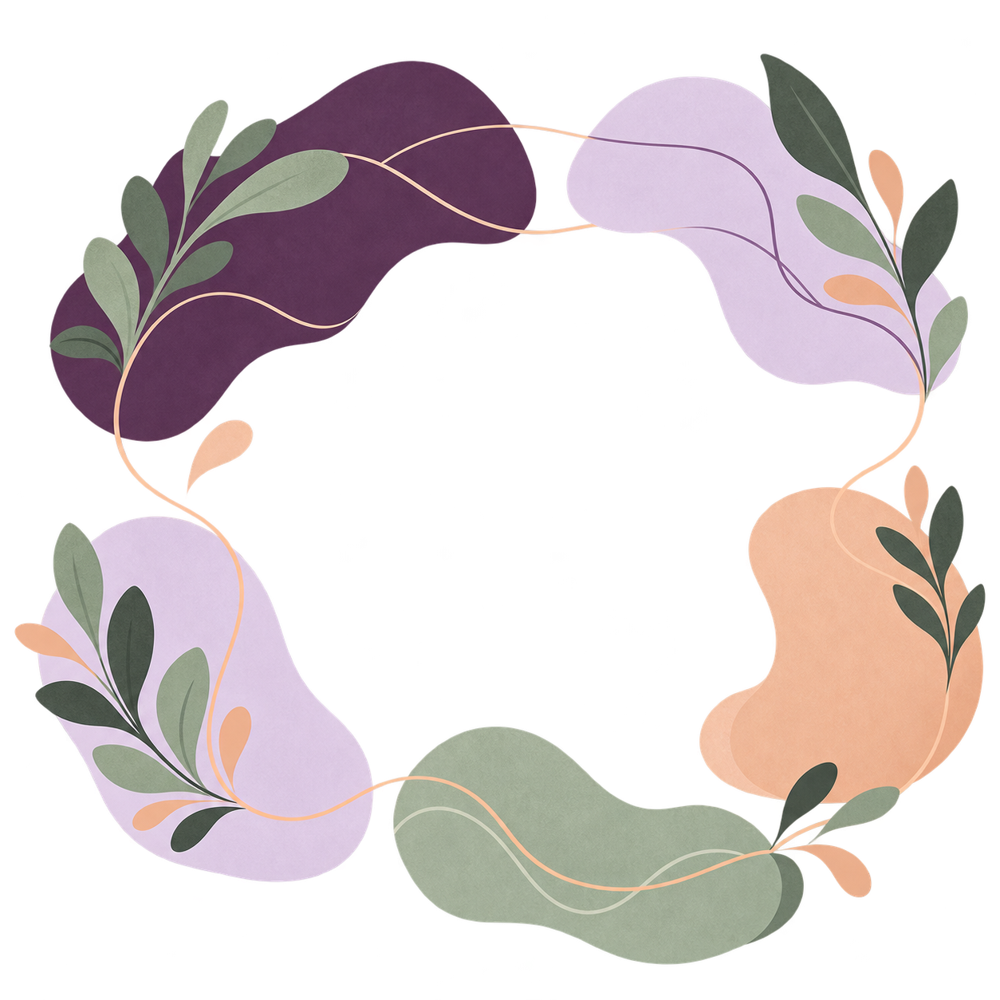
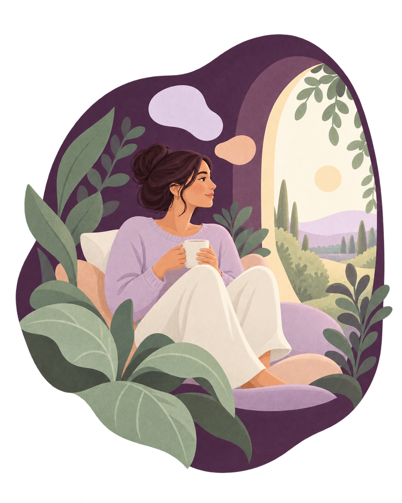
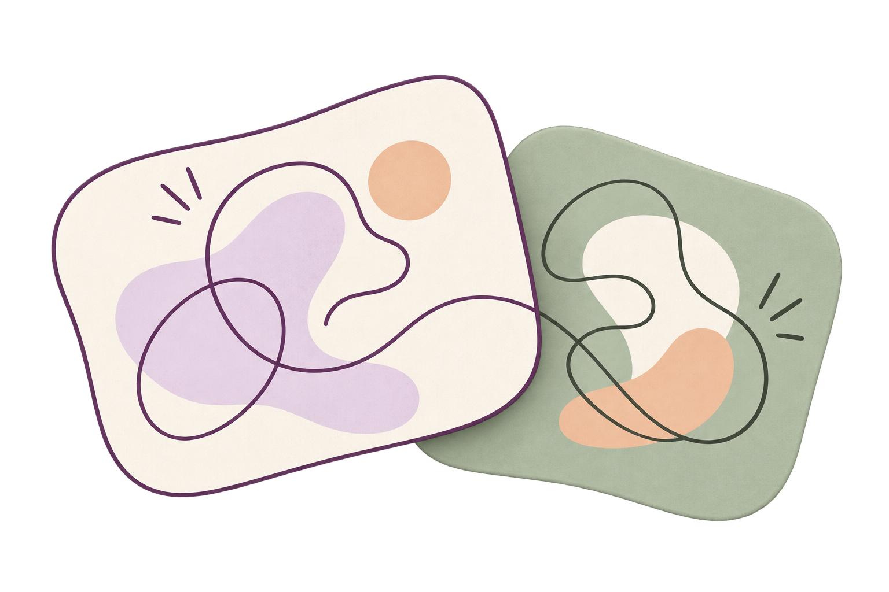

Imagens para Psico-C
16 assets: nove imagens geradas e sete peças vetoriais. Os retratos usam uma modelo fictícia para protótipo. Clique na imagem para abrir o original ou use o link para baixar.
O quadriculado da galeria indica transparência e não faz parte dos arquivos. O desenho de áudio é um estudo visual; os avatares são abstratos.














